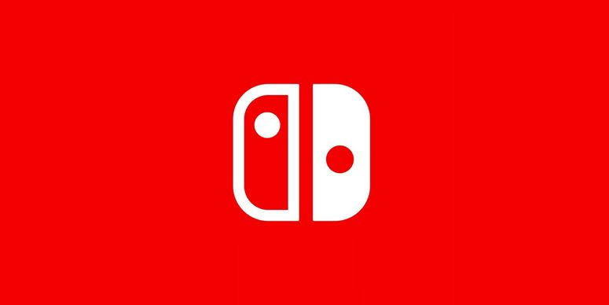

Nintendo Switch Homebrew & CFW
Custom firmware, bootloaders, and homebrew for the Nintendo Switch. Start with Atmosphère, the most widely used CFW.
Custom Firmware
The software that unlocks homebrew on the Switch

Atmosphère CFW
The most widely used custom firmware for the Nintendo Switch. Open source, actively maintained, and the base most homebrew expects.

Hekate Bootloader
Bootloader and recovery tools for supported Switch setups. Match the release to your Atmosphère and firmware configuration.
Hekate downloads & setupSwitch Homebrew & Setup
Start with the model-specific guide, then add compatible tools.
28 Switch apps, ready console builds
Emulators, homebrew games, save managers, file transfer, media players and diagnostics. Browse verified versions, requirements, SD paths and checksums.

Nintendo Homebrew Guide
Identify your Switch model and follow its supported setup path. Prepare the microSD card, backups and Atmosphère using the current guide.
Switch setup guide
Homebrew App Store
Browse and manage community homebrew applications on a compatible Switch. Read installation instructions before copying files.
Switch App Store downloadsRetroArch on Switch
Multi-system emulation on the console itself. Check the Switch build and individual core requirements.
RetroArch downloads & setupEmulating Nintendo systems on a PC?
Desktop Nintendo emulators now live in the PC section, separate from software running on the Switch.
Open PC Nintendo EmulatorsSwitch system firmware archive
System-software packages, separate from Atmosphère CFW and bootloader releases.
Darthsternie’s archive lists global and China-region firmware packages with version numbers, file sizes and MD5 hashes. Match the firmware to the support documented by your installed Atmosphère and bootloader versions before using your setup’s update procedure.
The archive flags some packages as unsuitable for installation or unsupported by particular installers. Read the entry’s notes before choosing a file.
Before You Mod Your Switch
Not Every Switch Can
Only unpatched consoles can run CFW without a hardware modchip. Check your serial number before buying anything or opening the console.
Online Bans
Nintendo bans consoles it detects running CFW, and a ban is tied to the hardware. Keep a modded Switch off Nintendo's online services.
Back Up Your NAND
Dump your NAND and keys before installing anything. Without that backup a bad flash can leave the console unrecoverable.
Own Your Games
Homebrew is legal; piracy is not. Only use dumps of games you actually own.